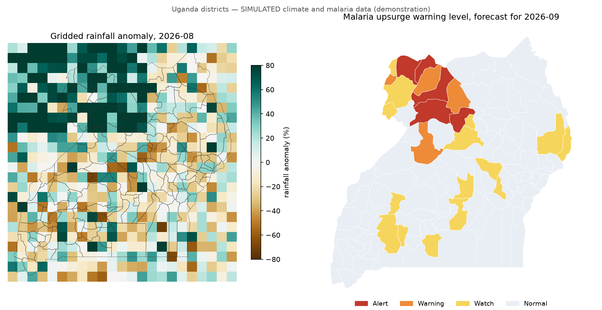
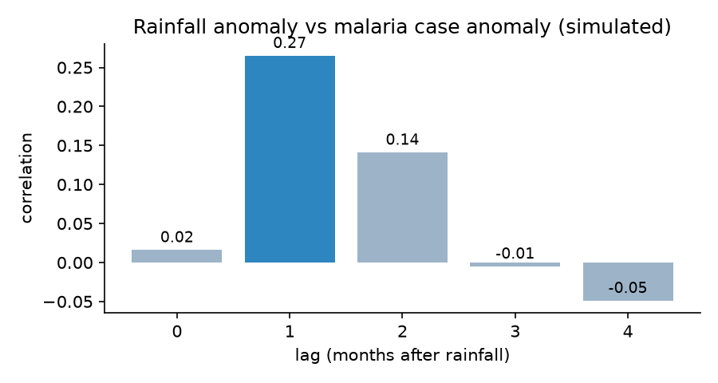
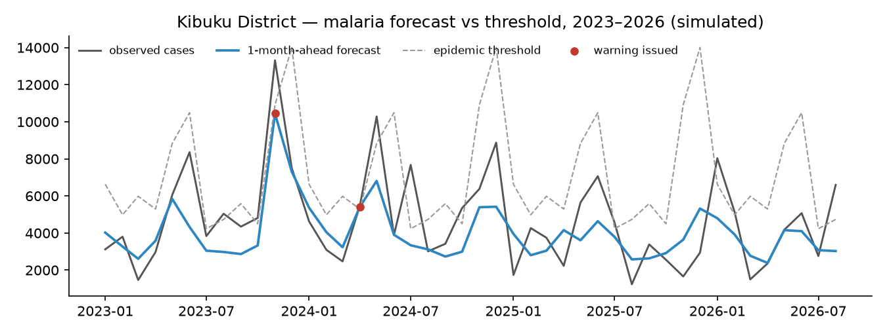

9 districts need action in September 2026. Yumbe, Amuru, Oyam, Nwoya and Moyo are on Alert; Adjumani, Gulu, Masindi and Maracha are on Warning. 8 of the 9 are in Northern region.
Simulated data, for demonstration and training. District names and boundaries are real (Natural Earth). Rainfall, temperature and malaria case figures are simulated to look like CHIRPS, ERA5 and HMIS data. CAP alerts are marked Exercise.
A district's level is the forecast chance that next month's confirmed cases go above its epidemic threshold (mean plus 2 standard deviations of past cases for that calendar month).
Left: last month's rainfall compared with normal. Right: warning level for September 2026.

Every district above Normal, highest chance first. Alert and Warning districts each have a CAP alert.
| District | Region | Level | Chance above threshold | Forecast cases | Threshold | Rain last month (mm) | Action |
|---|---|---|---|---|---|---|---|
| Yumbe | Northern | Alert | 19,508 | 10,924 | 272 | Execute | |
| Amuru | Northern | Alert | 46,710 | 30,013 | 226 | Execute | |
| Oyam | Northern | Alert | 42,831 | 28,369 | 288 | Execute | |
| Nwoya | Northern | Alert | 15,211 | 10,261 | 201 | Execute | |
| Moyo | Northern | Alert | 52,847 | 41,460 | 257 | Execute | |
| Adjumani | Northern | Warning | 8,193 | 7,986 | 185 | Prepare | |
| Gulu | Northern | Warning | 52,176 | 55,040 | 166 | Prepare | |
| Masindi | Western | Warning | 13,319 | 14,170 | 112 | Prepare | |
| Maracha | Northern | Warning | 24,059 | 26,150 | 262 | Prepare | |
| Kole | Northern | Watch | 126,584 | 141,521 | 168 | Monitor | |
| Zombo | Northern | Watch | 32,432 | 36,439 | 202 | Monitor | |
| Luweero | Central | Watch | 3,657 | 4,119 | 67 | Monitor | |
| Koboko | Northern | Watch | 69,007 | 81,189 | 216 | Monitor | |
| Wakiso | Central | Watch | 2,631 | 3,163 | 63 | Monitor | |
| Arua | Northern | Watch | 58,310 | 71,265 | 187 | Monitor | |
| Luuka | Eastern | Watch | 5,932 | 7,498 | 56 | Monitor | |
| Nakapiripirit | Northern | Watch | 17,433 | 22,722 | 93 | Monitor | |
| Buyende | Eastern | Watch | 8,499 | 11,134 | 66 | Monitor | |
| Lyantonde | Central | Watch | 4,593 | 6,026 | 54 | Monitor | |
| Masaka | Central | Watch | 3,855 | 5,083 | 74 | Monitor | |
| Amudat | Northern | Watch | 13,251 | 17,746 | 65 | Monitor | |
| Mbarara | Western | Watch | 7,134 | 9,572 | 71 | Monitor | |
| Kyegegwa | Western | Watch | 2,735 | 3,706 | 72 | Monitor | |
| Apac | Northern | Watch | 15,409 | 20,920 | 61 | Monitor |
Execute: check ACT and RDT stocks, intensify case management and vector control, report weekly. Prepare: pre-position stock and alert health facilities. Monitor: follow weekly mTrac/eIDSR reports.
The model was trained on 2015–2022 and tested on Jan 2023–Aug 2026, data it had not seen, against a model that only knows the seasonal pattern. The model marked ✓ produces the forecast above.
A Warning or Alert counts as a hit when cases went above the threshold the next month
| Model | Epidemic months | Warned | Missed |
|---|---|---|---|
| seasonal only (no climate) | 452 | 60 | 392 |
| climate-informed (rain lag 1-2, temperature) | 452 | 133 | 319 |
Correlation between rainfall and case anomalies at each lag. In the model, 50 mm more rain raises next month's cases by about 26% and cases two months later by about 13%.

The district with the most epidemic months in Jan 2023–Aug 2026. Red dots mark months a warning was issued.

| Level | Above (+) or below threshold |
|---|